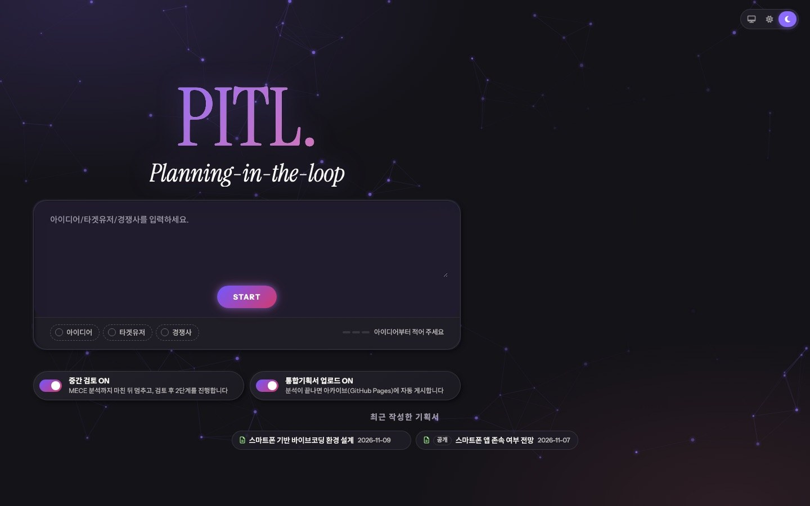

1-Pager
이 제품이 왜 필요한지 한 장으로 정리합니다.
한 줄만 적어 보세요. PITL이 그 한 줄을 아홉 개의 기획 문서로 키우고, 중간에 멈춰 당신의 판단을 담아 나머지를 완성합니다.

기획의 큰 방향은 사람이 정하고, 문서를 쓰는 일은 PITL이 맡습니다. 이 흐름을 Planning-in-the-Loop라고 부릅니다.
만들고 싶은 제품을 한 줄로 적고, 알면 타깃 사용자와 경쟁사도 함께 적습니다. 예시로 시작해도 됩니다.
아이디어 / 타깃 / 경쟁사1-Pager부터 MECE까지 분석을 마치면 PITL이 멈춥니다. 결과를 읽고 의견을 남기면 그 내용이 이후 문서에 반영됩니다.
중간 검토 · 중지/재개PRD, 와이어프레임, 클릭해 볼 수 있는 프로토타입, 앞 문서들을 대조하는 QA 감사까지 만들어집니다.
9개 문서 · 대시보드앞 문서가 뒤 문서의 근거가 됩니다. 시장을 분석한 결과가 요구사항이 되고, 요구사항이 화면이 됩니다.
이 제품이 왜 필요한지 한 장으로 정리합니다.
자사·고객·경쟁사를 나눠 보고 차별화 기회를 찾습니다.
강점·약점·기회·위협을 정리하고 전략 방향을 잡습니다.
시장을 나누고, 집중할 대상과 포지셔닝을 정합니다.
빠짐도 겹침도 없게 문제를 구조화합니다. 이 단계가 끝나면 멈춥니다.
무엇을 어떻게 만들지 기능·정책·예외 처리까지 적습니다.
정보 구조와 CTA가 다른 화면 설계안을 비교합니다.
브라우저에서 바로 눌러 볼 수 있는 HTML 시안입니다.
1-Pager·PRD·화면이 서로 맞는지 대조하고 고칠 점을 냅니다.
분석이 끝나면 다음 단계로 넘어가기 전에 멈춥니다. 방향이 맞지 않으면 여기서 바로잡을 수 있습니다. 검토 없이 끝까지 진행하도록 끌 수도 있습니다.
기획 생성과 기록 저장은 내 컴퓨터의 로컬 서버(localhost:7878)가 합니다. 웹 화면은 그 서버에 연결해서 쓰는 창입니다.
진행 중인 기획을 언제든 멈추고, 준비되면 멈춘 자리에서 다시 시작합니다.
단계별 진행률과 남은 시간을 보여 주고, 완성된 문서는 대시보드에 모입니다.
완성한 기획서를 파일로 내보내거나, 원하면 GitHub Pages 아카이브에 게시합니다.
압축을 풀고 시작 스크립트를 더블클릭하면 설치부터 서버 실행까지 한 번에 진행됩니다. Node.js와 로그인된 Claude Code가 필요합니다.
Also for Windows · Linux · Install from GitHub via terminal · Source on GitHub
데모에서 화면 구성과 공개된 예시 기획서를 볼 수 있습니다. 새 기획서를 만들려면 내 컴퓨터에 로컬 서버를 켜야 합니다.
기획 문서는 내 컴퓨터에 로그인된 Claude Code(claude -p)로 만듭니다. 웹 화면은 브라우저에서 열리지만, 실제 생성과 기록 저장은 localhost:7878에서 돌아가는 서버가 맡습니다.
내 컴퓨터의 PITL 폴더에만 저장됩니다. 아카이브 자동 게시는 시작 스크립트에서 꺼진 상태로 시작하며, .env의 ARCHIVE_AUTO_PUBLISH로 켤 수 있습니다.
PITL 자체는 무료로 받을 수 있습니다. 기획 문서를 만들 때는 내 Claude Code 계정의 사용량이 쓰입니다.
서버가 켜져 있는지 확인한 뒤 다시 연결을 누르세요. "포트 7878에서 이미 서버가 실행 중"이라는 메시지가 나오면 이미 켜져 있는 것이니 다시 연결만 누르면 됩니다.
터미널에서 claude를 실행해 로그인 상태를 확인하세요. 로그인이 풀려 있으면 문서를 만들 수 없습니다.